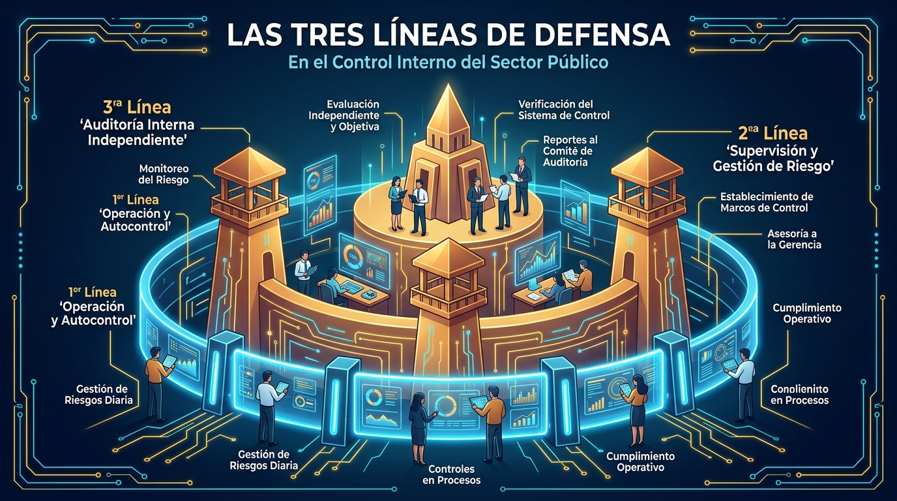

GESTOR III
Funcional
MIPG
📸 Contexto Visual: Inspección y Control Fiscal en Zona Primaria
Caso Situacional (Pruebas Escritas DIAN)
Cargando caso...
Cargando enunciado...
⚡
Speed Drill Relámpago
🔥 Racha: 0
Tema Legal
⏳ 15s
Afirmación a Evaluar
Cargando afirmación...
Fórmulas e Infografías Visuales
Anclas de memoria y mapas conceptuales del concurso
🖼️ Infografías de Estudio Visual

Fortaleza de las 3 Líneas de Defensa
Sistema de Control Interno (Ley 87 de 1993 y MECI)
El Corazón y las 7 Dimensiones del MIPG
Talento Humano articulando las políticas de gestión
GESTOR III (OPEC 242703)
DIAN 2676 • Ficha FT-TAH-1824
Propósito Principal del Empleo
Cargando propósito...
Funciones Esenciales del Cargo
5 funciones
Tarjetas de Repaso SRS
Cuaderno de errores con método Feynman
Simulacro Tipo Examen DIAN 2676
Evalúa tu velocidad y precisión. Tendrás 2 minutos (120 segundos) por pregunta. Recuerda que la prueba de Competencias Funcionales es ELIMINATORIA (65%) y exige un puntaje mínimo de 70.00 puntos.
Cantidad de preguntas:
5 casos situacionales
Ejes evaluados:
Funcionales, Comportamentales e Integridad
Pregunta 1 de 5
⏳ 02:00
Diagnóstico de Preparación
Nivel de Dominio DIAN
0 casos respondidos
0%
Aciertos
Respondidas
0
Aciertos
0
En Repaso
0
🎖️ Insignias de Honor y Mérito
Desbloqueada
Guardián de la Integridad
⭐ Activa
Concedida por defender los principios de Honestidad, Diligencia, Respeto y Justicia sin tolerar sobornos ni conflictos de interés.
🧮 Calculadora Convocatoria DIAN
⚠️ Umbral 70.00
Simula tus puntajes esperados con los pesos reales del concurso (Funcionales 65%, Comportamentales 15%, Integridad 10%, Antecedentes 10%):
Competencias Funcionales (65%):
75 pts
Competencias Comportamentales (15%):
80 pts
Prueba de Integridad (10%):
85 pts
Valoración de Antecedentes (10%):
70 pts
Puntaje Ponderado Proyectado
Supera el umbral eliminatorio
76.25
📊 Dominio por Componente Oficial
Competencias Funcionales (Eliminatorio 65%)
0%
Competencias Comportamentales (15%)
0%
Prueba de Integridad (10%)
0%